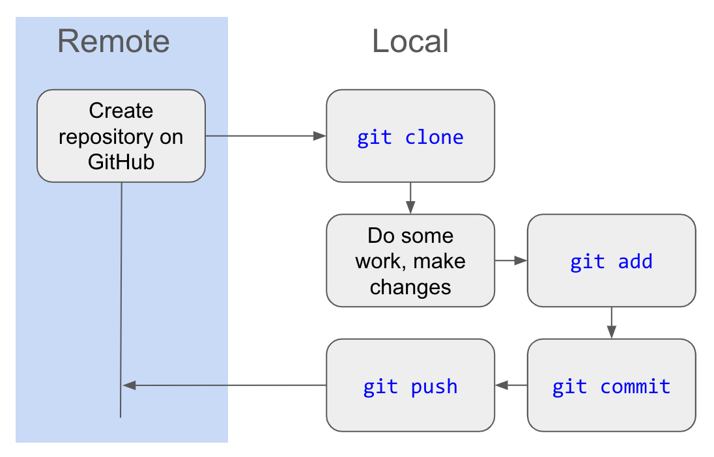

Version control and reproducible research
PM 566: Introduction to Health Data Science
Part I: Intro
What is version control?

[I]s the management of changes to documents […] Changes are usually identified by a number or letter code, termed the “revision number”, “revision level”, or simply “revision”. For example, an initial set of files is “revision 1”. When the first change is made, the resulting set is “revision 2”, and so on. Each revision is associated with a timestamp and the person making the change. Revisions can be compared, restored, and with some types of files, merged. – Wikipedia
Why do we care
Have you ever:
Made a change to code, realised it was a mistake and wanted to revert back?
Lost code or had a backup that was too old?
Had to maintain multiple versions of a product?
Wanted to see the difference between two (or more) versions of your code?
Wanted to prove that a particular change broke or fixed a piece of code?
Wanted to review the history of some code?
Why do we care (cont’d)
Wanted to submit a change to someone else’s code?
Wanted to share your code, or let other people work on your code?
Wanted to see how much work is being done, and where, when and by whom?
Wanted to experiment with a new feature without interfering with working code?
In these cases, and no doubt others, a version control system should make your life easier.
– Stackoverflow (by si618)
Git: The stupid content tracker

Git: The stupid content tracker
During this class (and perhaps, the entire program) we will be using Git.
Git is used by most developers in the world.
A great reference about the tool can be found here
More on what’s stupid about git here.
How can I use Git
There are several ways to include Git in your work-pipeline. A few are:
Through command line
Through one of the available Git GUIs:
More alternatives here.
Basic commands

A Common workflow
- Start the session by pulling (possible) updates:
git pull - Make changes
- (optional) Add untracked (possibly new) files:
git add [target file] - (optional) Stage tracked files that were modified:
git add [target file] - (optional) Revert changes on a file:
git checkout [target file]
- (optional) Add untracked (possibly new) files:
- Move changes to the staging area (optional):
git add - Commit:
- If nothing pending:
git commit -m "Your comments go here." - If modifications not staged:
git commit -a -m "Your comments go here."
- If nothing pending:
- Upload the commit to the remote repo:
git push.
First time

The rest of the time
Check the status
- Can’t remember if you’ve changed any files?
- Don’t know if your local repository is in sync with the remote repository?
You can always check the current state of your repository with git status!
Part II: Hands-on git repo
Hands-on 0: Introduce yourself
Set up your git install with git config, start by telling who you are
$ git config --global user.name "Juan Perez"
$ git config --global user.email "jperez@treschanchitos.edu"Try it yourself (5 minutes) (more on how to configure git here)
Hands-on 1: First repository
We will start by working on our very first project. To do so, you are required to start using Git and Github so you can share your code with your team. For this exercise, you need to
- Log into GitHub and click on the “plus” icon (“Create new…”) in the top right, then select “New repository”
- Give your repo a name, like
PM566-first-project, tell GitHub to add aREADMEfile, and click “Create repository” - From your repository’s page, click the green “Code” button and copy the URL, which should end with
.git - From the command line on your computer, type
git cloneand then paste the URL
You now have a local version of your repository!
Hands-on 1: First repository
Now, let’s make some changes!
- Open the README file in a text editor and add a brief description of the project (this doesn’t have to be accurate, just add some text), then save your changes. If you check the
git statusnow, you’ll see that you have unstaged changes. - Add your changes to the staging area with
git add READMEorgit add --all. If you check thegit statusnow, you’ll see that you have staged changes, ready to commit.
Note 1: We are assuming that you already installed git in your system.
Note 2: Need a text editor? Checkout this website link.
Hands-on 1: First repository
- Make the first commit using the
git commitcommand adding a message, e.g.
$ git commit -m "My first commit ever!"If you check the git status now, you’ll see that you are 1 commit ahead of the remote repository (GitHub).
- Update your remote repository (on GitHub) with
git push. If you check thegit statusnow, you should see that you are fully up to date. - In your browser, refresh the page for your repository and see if your changes to the
READMEfile are there!
Hands-on 1: First repository
Oops! It seems that I added the wrong file to the tree, you can remove files from the tree using git rm --cached, for example, imagine that you added the file class-notes.docx (which you are not supposed to track), then you can remove it using
$ git rm --cached class-notes.docxThis will remove the file from the tree but not from your computer. You can go further and ask git to avoid adding .docx files using the .gitignore file
.gitignore use-case
I like to have my data and code for a project all in the same place, but I don’t want to upload the data to GitHub, as this would exceed the size limit on a repository.
Open (or create) the .gitignore file in a text editor and add the following line to ignore the directory called data:
data/Example for .gitignore
Telling git to ignore files is a good way to make sure you don’t go over your storage limit on GitHub. It’s also just a convenient way to avoid unnecessary clutter. Example based on Pro-Git (link).
# ignore specific file (something.pdf) something.pdf # ignore all .png files *.png # but do track bird.png, even though you're ignoring .png files !bird.png # only ignore the TODO file in the root directory, not subdir/TODO /TODO # ignore all files in any directory named build build/ # ignore doc/notes.txt, but not doc/server/arch.txt doc/*.txt # ignore all .pdf files in the doc/ directory and any of its subdirectories doc/**/*.pdf
Part III: GitHub Desktop live demo
Let’s do the same sequence of tasks we just performed, but this time, using GitHub Desktop.
Resources
Git’s everyday commands, type
man giteverydayin your terminal/command line. and the very nice cheatsheet.My personal choice for nightstand book: The Pro-git book (free online) (link)
Github’s website of resources (link)
The “Happy Git with R” book (link)
Roger Peng’s Mastering Software Development Book Section 3.9 Version control and Github (link)
Git exercises by Wojciech Frącz and Jacek Dajda (link)
Checkout GitHub’s Training YouTube Channel (link)